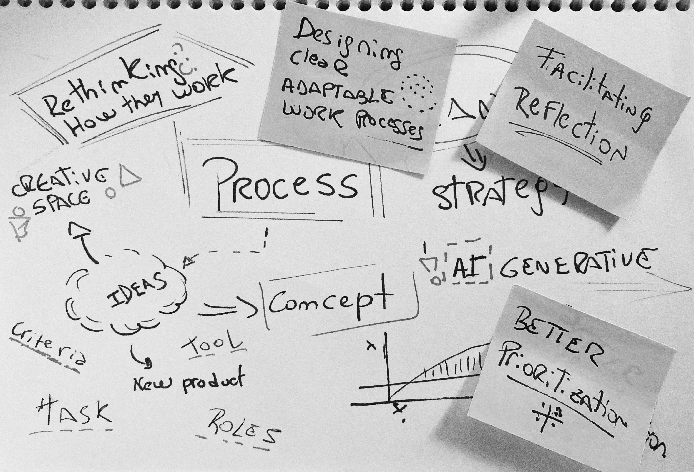
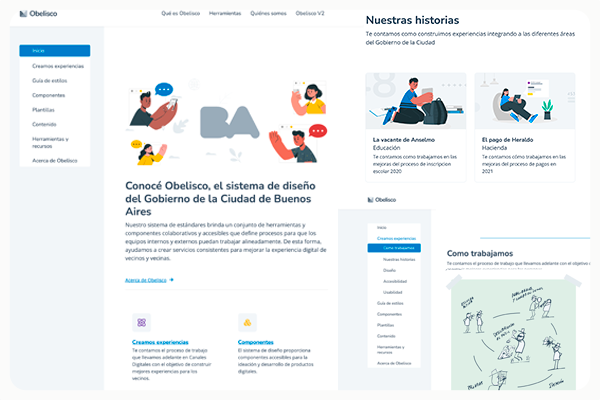
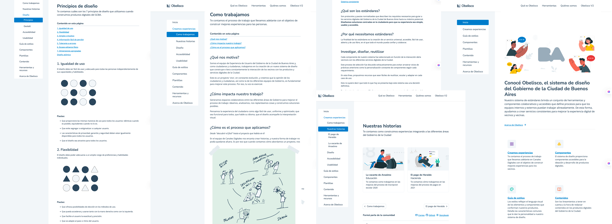
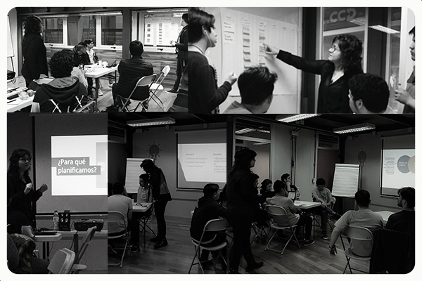
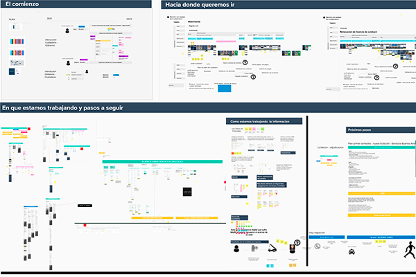
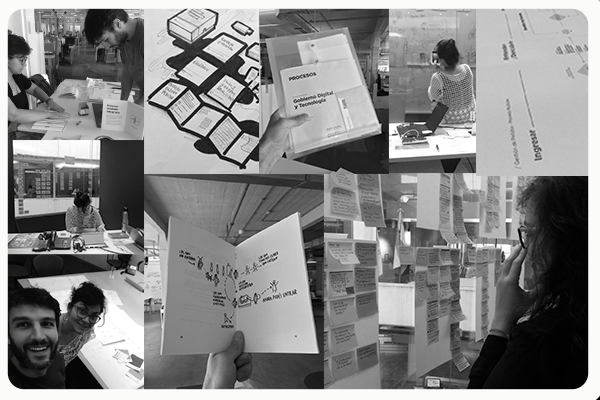

Selected Work
Selected Work
Seven examples across design-system governance, UX strategy, process design, and facilitation.
Selected Work
Seven examples across design-system governance, UX strategy, process design, and facilitation.

Consulting · DesignOps
External strategic support to help fast-growing teams transition from "startup chaos" to structured autonomy.

Design Systems · Governance
Standardization, governance, and adoption across a large public-service ecosystem.

Design Systems · Enablement
Documentation and enablement work that made shared standards easier to use in delivery.

Design Seeds · Education & Impact
Creating a systemic impact model for technical education and future talent pipelines.

UX Strategy · Service Clarity
Journey, hierarchy, and structure explorations used to align teams before implementation.

Process Design · Workshops
Workflow mapping, role clarity, and operating-model work to reduce delivery friction.

Facilitation · Collaboration
Designing workshop formats that translate emerging technologies into clear propositions for citizen participation